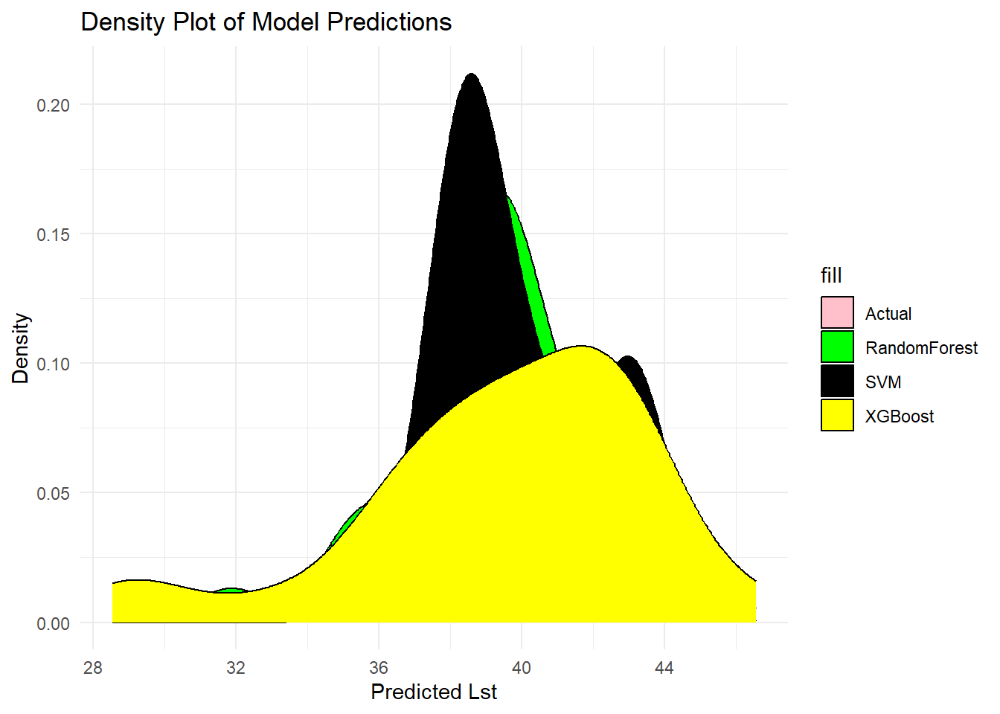

summer_data = read.csv("summer_data.csv")
library(randomForest)Warning: package 'randomForest' was built under R version 4.2.3randomForest 4.7-1.1Type rfNews() to see new features/changes/bug fixes.library(e1071)Warning: package 'e1071' was built under R version 4.2.3library(xgboost)Warning: package 'xgboost' was built under R version 4.2.3library(ggplot2)
Attaching package: 'ggplot2'The following object is masked from 'package:randomForest':
margin# Load your dataset (replace 'your_data' with your actual dataset)
# Example: summer_data <- read.csv("your_data.csv")
# Fit a Random Forest model
rf_model <- randomForest(Lst ~ Avg.Temp.C + Min.Temp.C, data = summer_data)
# Fit a Support Vector Machine (SVM) model using the e1071 package
svm_model <- svm(Lst ~ Avg.Temp.C + Min.Temp.C, data = summer_data)
# Fit an XGBoost model
xgb_model <- xgboost(data = as.matrix(summer_data[, c("Avg.Temp.C", "Min.Temp.C")]),
label = summer_data$Lst,
objective = "reg:squarederror", nrounds = 100)[1] train-rmse:27.953901
[2] train-rmse:20.038160
[3] train-rmse:14.452481
[4] train-rmse:10.548952
[5] train-rmse:7.851009
[6] train-rmse:5.867752
[7] train-rmse:4.461927
[8] train-rmse:3.487385
[9] train-rmse:2.804483
[10] train-rmse:2.260476
[11] train-rmse:1.868209
[12] train-rmse:1.571221
[13] train-rmse:1.358508
[14] train-rmse:1.178783
[15] train-rmse:1.012746
[16] train-rmse:0.872232
[17] train-rmse:0.774190
[18] train-rmse:0.675167
[19] train-rmse:0.609960
[20] train-rmse:0.534567
[21] train-rmse:0.467033
[22] train-rmse:0.412710
[23] train-rmse:0.371853
[24] train-rmse:0.331187
[25] train-rmse:0.302843
[26] train-rmse:0.270692
[27] train-rmse:0.240539
[28] train-rmse:0.215396
[29] train-rmse:0.195199
[30] train-rmse:0.176390
[31] train-rmse:0.156817
[32] train-rmse:0.134670
[33] train-rmse:0.116078
[34] train-rmse:0.100507
[35] train-rmse:0.087555
[36] train-rmse:0.076768
[37] train-rmse:0.068817
[38] train-rmse:0.062695
[39] train-rmse:0.057158
[40] train-rmse:0.053980
[41] train-rmse:0.049469
[42] train-rmse:0.044766
[43] train-rmse:0.041290
[44] train-rmse:0.038951
[45] train-rmse:0.035218
[46] train-rmse:0.032298
[47] train-rmse:0.029613
[48] train-rmse:0.027188
[49] train-rmse:0.025078
[50] train-rmse:0.022451
[51] train-rmse:0.020174
[52] train-rmse:0.018390
[53] train-rmse:0.017001
[54] train-rmse:0.015288
[55] train-rmse:0.013500
[56] train-rmse:0.012279
[57] train-rmse:0.011034
[58] train-rmse:0.009757
[59] train-rmse:0.008857
[60] train-rmse:0.008225
[61] train-rmse:0.007401
[62] train-rmse:0.006708
[63] train-rmse:0.006047
[64] train-rmse:0.005682
[65] train-rmse:0.005363
[66] train-rmse:0.004845
[67] train-rmse:0.004580
[68] train-rmse:0.004145
[69] train-rmse:0.003922
[70] train-rmse:0.003555
[71] train-rmse:0.003263
[72] train-rmse:0.002958
[73] train-rmse:0.002723
[74] train-rmse:0.002484
[75] train-rmse:0.002279
[76] train-rmse:0.002151
[77] train-rmse:0.001993
[78] train-rmse:0.001914
[79] train-rmse:0.001736
[80] train-rmse:0.001641
[81] train-rmse:0.001493
[82] train-rmse:0.001480
[83] train-rmse:0.001480
[84] train-rmse:0.001480
[85] train-rmse:0.001480
[86] train-rmse:0.001480
[87] train-rmse:0.001480
[88] train-rmse:0.001480
[89] train-rmse:0.001480
[90] train-rmse:0.001480
[91] train-rmse:0.001481
[92] train-rmse:0.001481
[93] train-rmse:0.001481
[94] train-rmse:0.001481
[95] train-rmse:0.001481
[96] train-rmse:0.001481
[97] train-rmse:0.001481
[98] train-rmse:0.001481
[99] train-rmse:0.001481
[100] train-rmse:0.001482 # Create a new dataset with predictions from the three models
predictions <- data.frame(
Actual = summer_data$Lst,
RandomForest_Pred = predict(rf_model, summer_data),
SVM_Pred = predict(svm_model, summer_data),
XGBoost_Pred = predict(xgb_model, as.matrix(summer_data[, c("Avg.Temp.C", "Min.Temp.C")]))
)
# Create a density plot of the model predictions
ggplot(predictions, aes(x = Actual)) +
geom_density(aes(fill = "Actual"), alpha = 1) +
geom_density(aes(x = RandomForest_Pred, fill = "RandomForest"), alpha = 1) +
geom_density(aes(x = SVM_Pred, fill = "SVM"), alpha = 1) +
geom_density(aes(x = XGBoost_Pred, fill = "XGBoost"), alpha = 1) +
labs(title = "Density Plot of Model Predictions",
x = "Predicted Lst",
y = "Density") +
scale_fill_manual(values = c("Actual" = "pink",
"RandomForest" = "green",
"SVM" = "black",
"XGBoost" = "yellow")) +
theme_minimal()